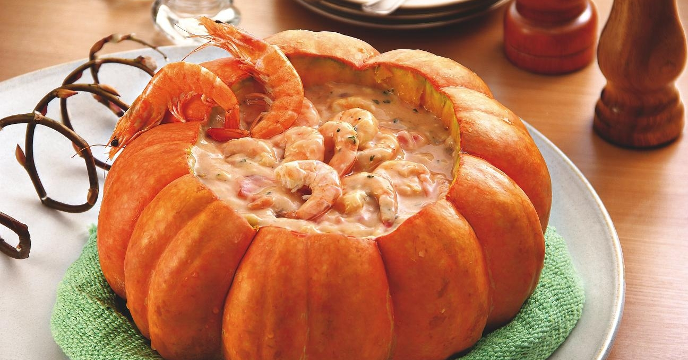
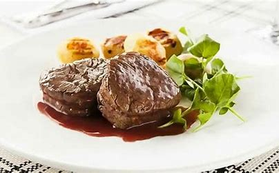
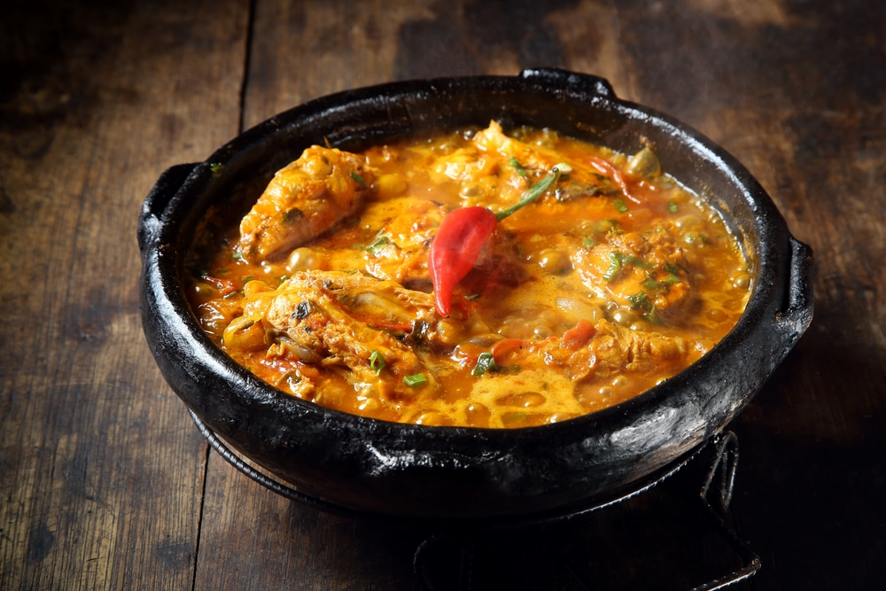
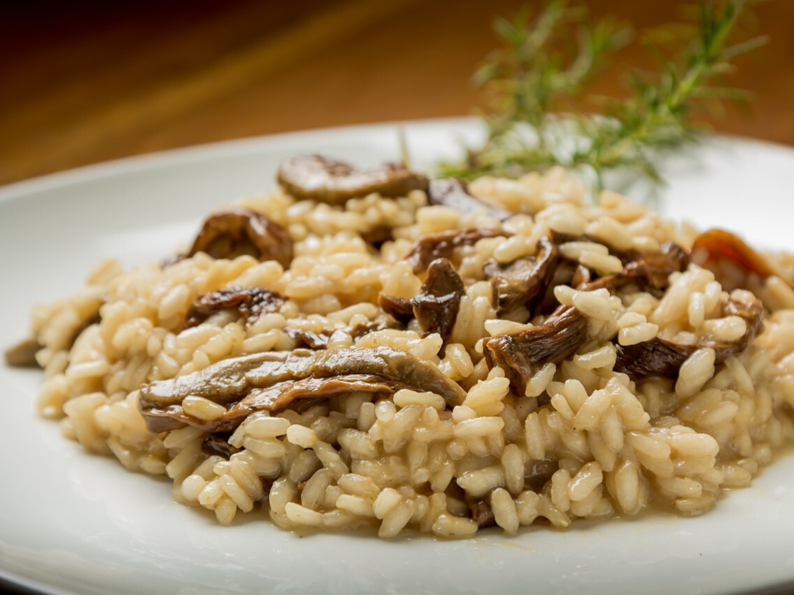

| Foto | Nome do prato | descrição | Preço |
|---|---|---|---|
|  | Camarao na moranga | O camarão na moranga é um prato típico da culinária brasileira que combina a suavidade do camarão com a textura cremosa da moranga (um tipo de abóbora). A preparação envolve esvaziar a moranga, preenchê-la com um creme de camarão temperado e assá-la até que a abóbora fique macia e absorva todos os sabores | R$ 139,99 |
|  | File mignon ao molho de vinho tinto | Filé Mignon ao Molho de Vinho é uma receita que combina a maciez e suculência do filé mignon com a riqueza e profundidade de um molho feito à base de vinho tinto. O molho de vinho tinto é preparado na mesma frigideira, aproveitando os sabores caramelizados da carne. | 79,99 |
|  | Moqueca de lagosta |
A moqueca de lagosta é um prato típico da culinária brasileira, especialmente popular nas regiões costeiras. Feita com lagosta, azeite de dendê, leite de coco, tomate, cebola, pimentão, coentro e cebolinha, a moqueca é um ensopado saboroso e aromático. | R$ 99,99 |
|  | risoto de funghi | O risoto de funghi é um prato clássico da culinária italiana, conhecido por seu sabor rico e sofisticado. Feito com arroz arbóreo, funghi secchi (cogumelos desidratados), vinho branco, caldo de legumes, cebola, alho, manteiga e queijo parmesão, o risoto é cremoso e aromático. | R$89,99 |